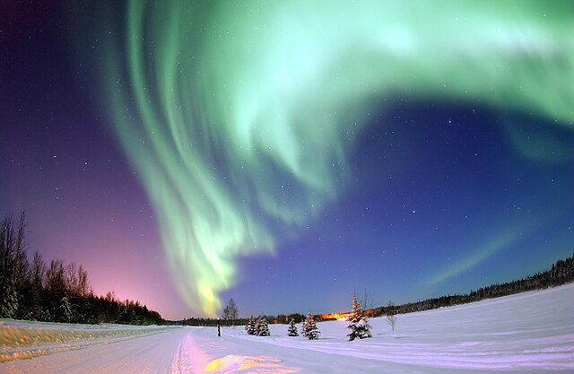

Durante grandes tempestades solares, um evento deslumbrante pode ser avistado em seu máximo potêncial. As auroras boreais
- Ventos solares
O Sol emite vento solar, que é composto de partículas energizadas chamadas plasma. O plasma é atraído para os polos da Terra pelo campo magnético. O plasma interage com os gases da atmosfera terrestre, como o oxigênio e o nitrogênio. Essa interação gera as luzes da aurora boreal.